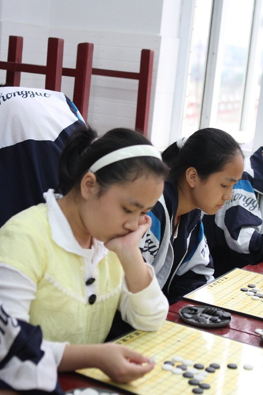

武汉市武昌区举行首届中小学生智力运动会
昨（23）日，武昌区举行了首届中小学生智力运动会，来自47所中小学的1200余学生在“五棋一牌（中国象棋、国际象棋、围棋、国际跳棋、五子棋和桥牌）”项目中展开了角逐，赛事还吸引了中国象棋特级大师柳大华前来，他鼓励中小学生多接触棋类，笑称“棋下得好的孩子成绩不会差”。
在主赛场，记者偶遇柳大华时，他正在几间象棋赛室走动观战，他表示中小学的水平不会太高，但还是希望有惊喜的发现。从参赛队员看，女生所占比例很小，不少赛场全部是清一色的男生，柳大华说，这并不表示男生比女生擅长棋牌，只是当前我们对女生学棋、参赛的重视程度不够，其实女生的思维不逊色于男生，这一现象值得我们关注。
对于部分家长认为下棋只是一种娱乐、影响学习之说，13岁时就获得湖北省少年象棋赛冠军的柳大华笑称，“五棋一牌”训练了学生的思维，也是一种意志力的训练，对学生的生活和学习都是有帮助的，“棋下得好的学生成绩多半不会差。”
据武昌区教育局副局长汪杰介绍，中小学生智力运动会在湖北省还属第一次。在过去的一两年间，武昌区部分学校将“五棋一牌”列入校本课程，让学生们学习一至两种棋牌，一方面调剂紧张的学习，另一方面增添生活乐趣。下一步，该区还将在全区中小学中普及棋牌教育，让12万中小学生走出校园时都有“一技之长”。
［ 无尽 于 2009-5-24 23:51:43 时奖励此帖[金币加 20 威望加1］
泓弈象棋网要开五子棋版块了（小道消息）
泓弈象棋网正在策划推出游戏平台，有象棋、国际跳棋，既然要开五子棋版，应该也会有五子棋游戏才对。
［ 失落刀 于 2009-5-25 17:58:52 时花20金币送鲜花一朵］
